Spektralna analiza signala
Mirna N. Kapetina mart 2020.
Contents
Inicijalizacija
Priprema radnog prostora. Brisanje svih promenljivih. Brisanje radnog prostora. Definisanje kompleksne promenljive 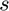. Napomena: Pri pokretanjau matlab koda preporucujemo pokretanje sekcije po sekciju tako sto se pozicionirate u sekciju i pritisnete komande Ctrl+Enter
clc close all clear all s = tf('s');
Snimak bez smetnji
Ucitavanje prethodno snimljenog snimka zvuka, koji nema znacajno izrazene smetnje. Posle ucitavanja signala izvrsena je njegova Furijeova transforamcija da bi se prikazao njegov spektar.
[x1, Fs1] = audioread('dus.m4a'); %ucitavanje originalnog snimka x1 = x1(:); Ts1 = 1/Fs1; t1 = (0:length(x1)-1)'*Ts1; X1 = fft(x1); % Furijeova transformacija signala koja ?e nam koristiti da bi nacrtali spektar F1 = linspace(-1, 1, length(X1))'*Fs1/2; %Crtanje spektra u?itanog signala figure subplot(211) plot(t1, x1) xlim([t1(1), t1(end)]); xlabel 'vreme [s]' ylabel 'f(t)' title ('Signal zvuka f(t)') subplot(212) plot(F1, abs(fftshift(X1))) xlabel 'frekvencija [Hz]' ylabel '|F(j\omega)|' title ('Spektar signala (bez suma)') sound(x1, Fs1);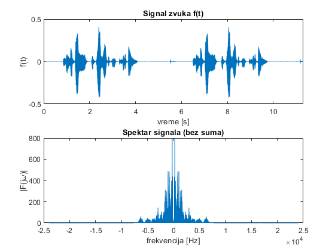
Gornja slika pokazuje signal zvuka. A na donjoj slici prikazan je spektar tog signala. Sa slike spektra moze uociti da se u spektru pojavljuju frekvencije i do 5000HZ, mada se najveci deo informacije signala nalazi u opsegu do oko 1000-1500Hz.
Odabir razlicitih perioda odabiranja
U nastavku ce prethodno ucitani signal biti odbirkovan i bice prikazan njegov spektar nakon sto tako odbirkovan signal prodje kroz D/A konvertor. Napominjemo da je prema Nikvist-Senonovoj teoremi preporucena frekvencija odabiranja

U nastavku cemo ucitani signal odbirkovati sa frekvenicijom odbirkovanja koja zadovoljava preporuke, kao i sa lose odabranom frekvencijom da bi uo?ili razlike.
- Dobro odabrana frekvencija. Za frekvenciju odbirkovanja uzecemo
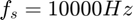
Fs_b=10000; %Dobra perioda odabiranja Ts_b = 1/Fs_b; step=Ts_b/Ts1; x_b = x1(1:step:end); t_b = (0:step:length(x1)-1)'*Ts_b; X_b = fft(x_b); F_b = linspace(-1, 1, length(X_b))'*Fs_b/2; figure subplot(311) plot(t_b, x_b) xlabel 'vreme [s]' ylabel 'f(t)' xlim([t_b(1), t_b(end)]); subplot(312) title ('Signal zvuka f(t)') plot(F_b, abs(fftshift(X_b))) axis([-2.5*10^4 2.5*10^4 0 inf]) xlabel 'frekvencija [Hz]' ylabel '|F(j\omega)|' title ('Spektar posle odabiranja i D/A konverzije') subplot(313) plot(F1, abs(fftshift(X1))) title ('Spektar pre odabiranja') xlabel 'frekvencija [Hz]' ylabel '|F(j\omega)|' sound(x_b, Fs_b);
Warning: Integer operands are required for colon operator when used as index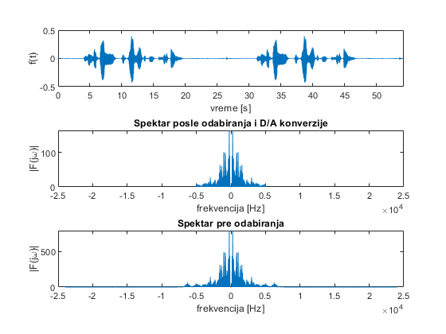
Prva slika predstavlja signal zvuka i vremenskom domenu posle odabiranja. Druga slika je spektar signala koji je nastao posle odabiranja i prosao kroz A/D konvertor. Napominjemo da je ovaj spektar rezultat umnozavanja originalnog spektra oko frekvencije odbirkovanja a potom odsecanje viska spektra posle Nikvistove ucestalosti koja sad iznosi 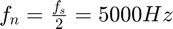
Treca slika je spektar originalnog signala.
Lako se moze uociti na osnovu spektra da je spektar pre i posle odabiranja isti. A i ako se slusa zvuk signala posle odabiranja isto tako se moze uociti da su sacuvane sve informacije u signalu posle odbirkovanja.
- Losa odabrana frekvencija. Za frekvenciju odbirkovanja uzecemo
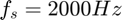
Fs_b=2000; %Losa perioda odabiranja Ts_b = 1/Fs_b; step=Ts_b/Ts1; x_b = x1(1:step:end); t_b = (0:step:length(x1)-1)'*Ts_b; X_b = fft(x_b); F_b = linspace(-1, 1, length(X_b))'*Fs_b/2; figure subplot(311) plot(t_b, x_b) xlabel 'vreme [s]' ylabel 'f(t)' xlim([t_b(1), t_b(end)]); subplot(312) plot(F_b, abs(fftshift(X_b))) axis([-2.5*10^4 2.5*10^4 0 inf]) xlabel 'frekvencija [Hz]' ylabel '|F(j\omega)|' title ('Spektar posle odabiranja i D/A konverzije') subplot(313) plot(F1, abs(fftshift(X1))) title ('Spektar pre odabiranja') xlabel 'frekvencija [Hz]' ylabel '|F(j\omega)|' sound(x_b, Fs_b);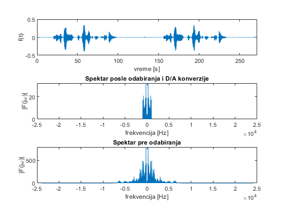
Sada kada poredimo spektar signala posle odabiranja i spektar originalnog signala mozemo da vidimo su razliciti i da je deo spektra 'izgubljen' usled odsecanja sa Nikvistovom frekvencijom 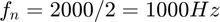. Kada se slusa zvuk odbirkovanog signala sa 'losom' frekvencijom, cuje se da je manji dio, ali zanemarljiv, informacije zvuka izgubljen, ali i dalje se jasno cuju izgovorene reci.
Snimak sa sumum
Ucitavanje prethodno snimljenog snimka zvuka gdje postoji i smetnja, sum, koji je nastao u ovom slucaju kao posledica suskanje kesom pri izgovaranju reci. Posle ucitavanja signala izvrsena je njegova Furijeova transforamcija da bi se prikazao njegov spektar.
[x2, Fs2] = audioread('dus_noise.m4a'); x2 = x2(10000:end-20000); x2 = x2(:); Ts2 = 1/Fs2; t2 = (0:length(x2)-1)'*Ts2; X2 = fft(x2); F2 = linspace(-1, 1, length(X2))'*Fs2/2; figure subplot(211) plot(t2, x2) xlabel 'vreme [s]' ylabel 'f(t)' xlim([t2(1), t2(end)]); subplot(212) plot(F2, abs(fftshift(X2))) xlabel 'frekvencija [Hz]' ylabel '|F(j\omega)|' sound(x2, Fs2);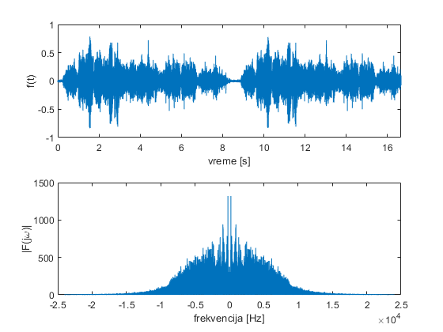
Na slici spektra signala sa sumom lako se mogu uociti frekvencije koje nisu postojale u spektru ovog signala kada nije bilo suma. Ovdje je lako uociti da se spektar ovog signala sada prosirio i do frkvencije oko 
Odbirkovanje zasumljenog signala
U nastavku ce prethodno ucitani signal biti odbirkovan i bice prikazan njegov spektar nakon sto tako odbirkovan signal prodje kroz D/A konvertor. Odmah ce vrsiti odbirkovanje ovako ucitanog signala sa 'losom frekvencijom' od koja je koristena u prethodnom primjeru.
Fs_b=2000; %Losa perioda odabiranja Ts_b = 1/Fs_b; step=Ts_b/Ts1; x_b = x2(1:step:end); t_b = (0:step:length(x2)-1)'*Ts_b; X_b = fft(x_b); F_b = linspace(-1, 1, length(X_b))'*Fs_b/2; figure subplot(311) plot(t_b, x_b) xlabel 'vreme [s]' ylabel 'f(t)' xlim([t_b(1), t_b(end)]); subplot(312) plot(F_b, abs(fftshift(X_b))) axis([-2.5*10^4 2.5*10^4 0 inf]) xlabel 'frekvencija [Hz]' ylabel '|F(j\omega)|' title ('Spektar posle odabiranja i D/A konverzije') subplot(313) plot(F2, abs(fftshift(X2))) title ('Spektar pre odabiranja') xlabel 'frekvencija [Hz]' ylabel '|F(j\omega)|' sound(x_b, Fs_b);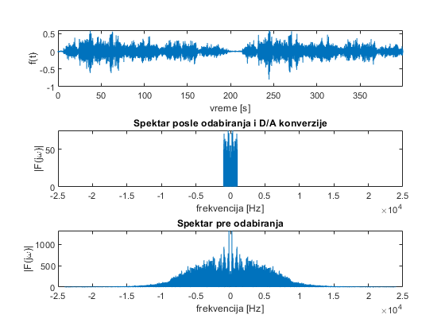
Sa slika spektra odbirkovanog signala i originalnog signala sa sumom jasno se vide razlike, pre svega jer se u osnovnom delu spektra pojavile frekvencije koje nisu postojale ranije a koje su posledica preslikavanja visih frekvenicija posle odabiranja, pojava ALIJASA. Medjutim, posledica lose frekvencije odabiranja se bolje moze uociti kada se cuje sam zvuk posle odbiranja, gdje je jasno da je sum nadjacao osnove reci i informaciju i da se pojavio u osnovnom spektru. U ovom primeru koliko god budemo povecavali periodu odbairanja mozemo da imamo slicne probleme sa alijasima, zbog toga se preporucuje da se signal pre odabiranja filtrira, a potom odbirkuje i da se time odstrane vise frekvencije.
Filtriranje signala
Kako smo uocili jos u prvom primeru kada smo analizirali signal bez suma, najveci deo informacija smesten je u opsegu oko 1000Hz, zbog toga ce se u nastavku zasumljeni signal filtrirati filtrom 10og reda sa presecnom ucestalosti na 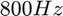, odnosno ![$2\pi*800 [rad/s]$](zvuk_eq01573271617453663788.png) , i sa pojcanjem 30. U nastavku ce biti nacrtan njegov Bodeov dijagram.
, i sa pojcanjem 30. U nastavku ce biti nacrtan njegov Bodeov dijagram.
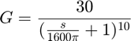
wg = 2*pi*800; order = 10; gain = 30; G = gain*(1/(s/wg + 1))^order; figure bode(G)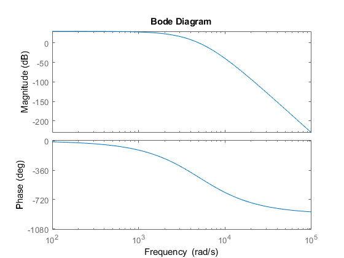
Dizajnirani filter je primenjen na signal sa sumom.
[xf, tf] = lsim(G, x2, t2); XF = fft(xf); FF = linspace(-1, 1, length(XF))'*Fs2/2; figure subplot(311) plot(F2, abs(fftshift(X2))) xlabel 'frekvencija [Hz]' ylabel '|F(j\omega)|' title ('Spketar zasumljenog signala') subplot(312) plot(FF, abs(fftshift(XF))) xlabel 'frekvencija [Hz]' ylabel '|F(j\omega)|' title ('Spketar filtriranog signala') subplot(313) plot(F1, abs(fftshift(X1))) xlabel 'frekvencija [Hz]' ylabel '|F(j\omega)|' title ('Spketar signala iz prvog primera') audiowrite('dus_filtered_novo.wav', xf, Fs2) %sound(xf, Fs2)
Warning: Data clipped when writing file.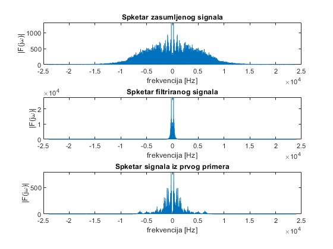
Sa slike spektra posle filtriranja lako se moze uociti da su odstranjene vise frekvencije iz signala koje su predstavljale zvuk. I posle reprodukcije signala moze se primjetiti da se sum koji bio rezultat suskanja kesom vise ne cuje. Ukoliko poredimo spektra filtriranog signala i signala iz prvog primera, vidi se da su informacije na nizim frekvencijama sacuvane, a tu su frekvencije koje odgovaraju izgovorenim recima. Sada je moguce ovakav signal odbirkovati
Odbirkovanje filtriranog signala
Prethodno filtrirani signala sada cemo odbirkovati. Kako je signal filtriran njegove najvise frekvencije ne prelaze 1000Hz, zbog cega cemo odabrati frekvenciju odabiranja 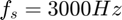.
Fs2_b=3000; %losa frekvencija odabiranja Ts2_b = 1/Fs2_b; step=Ts2_b/Ts2; x_b = xf(1:step:end); t_b = (0:step:length(xf)-1)'*Ts2_b; X_b = fft(x_b); F_b = linspace(-1, 1, length(X_b))'*Fs2_b/2; figure subplot(311) plot(F2, abs(fftshift(X2))) xlabel 'frekvencija [Hz]' ylabel '|F(j\omega)|' title ('Spektar signala sa sumom') subplot(312) plot(FF, abs(fftshift(XF))) xlabel 'frekvencija [Hz]' ylabel '|F(j\omega)|' title ('Spektar signala posle filtriranja') subplot(313) plot(F_b, abs(fftshift(X_b))) xlim([-2.5*10^4 2.5*10^4 ]) xlabel 'frekvencija [Hz]' ylabel '|F(j\omega)|' title ('Spektar posle odabiranja i D/A konverzije') sound(x_b, Fs2_b);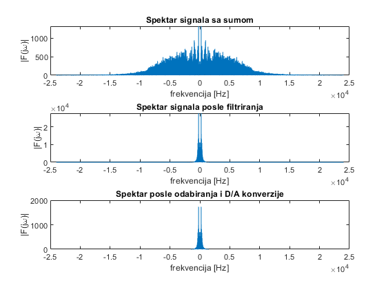
I posle odabiranja i A/D konverzije spektar je ispit.